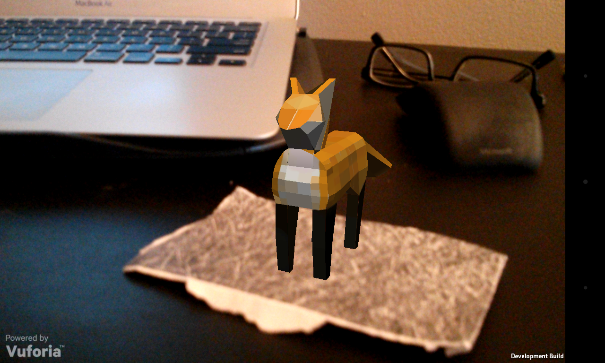

Clover Fox
An augmented reality project.
Description
Clover is a simply-animated, low-poly augmented reality fox. Clover exists in game mode (as a programmable character) and in companion mode (as a pet for your desk).

Clover began as the first step in my quest to create a pet miniature giraffe in augmented reality. Initially designed to exist only as a companion on my desk while working, a game mode (in which Clover is a programmable character) was added later specifically to get children interested in programming during the Imagine RIT festival.
Clover Fox, a play on the expression "Clever Fox", is character that, after many hours of trial-and-error rigging and animation, adopted some of the sassier personality traits of its creator.
Screen Shots
Get Clover
Clover is available for free on the Google Play Store.
In order to make Clover appear, you must also print the target image below without altering the image's size.
Technology
-
Blender
Free and open source 3D creation software. Blender was used for modeling, rigging, and animating Clover.
-
Unity
Development platform for creating multiplatform 3D and 2D games. Unity -Personal Edition was used to create the Clover App.
-
Vuforia
An augmented reality platform that provides plans for no-cost deployment. Vuforia was used to detect the target image.
Art and Animation
After discovering the price of a rigged and textured 3D model, I decided to learn and use Blender. After following the Mushroom tutorial listed below, I created, rigged, and animated my own low-poly fox and accidentally found a passion for 3-D modeling and animation.
Both Clover's game and companion modes include 13 hand crafted animations.